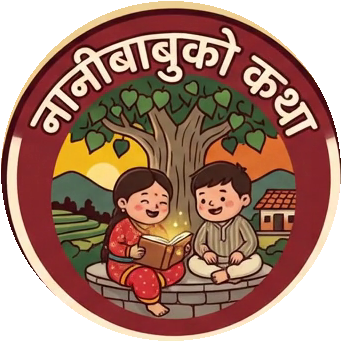
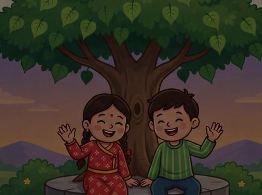
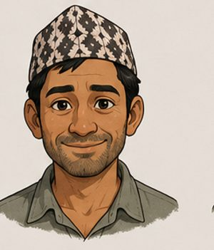
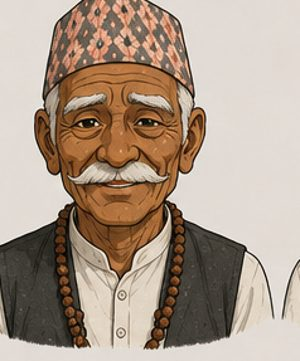

दूधमा पानी, मनमा ढुङ्गा
पाठ: इमानदारी
गोपालको एउटा गल्ती, बिमलको स्वास्थ्य र पूरा गाउँको विश्वास।

हरेक कथामा एउटा पाठ, हरेक पाठमा एउटा माया। सुनखोला गाउँका मौलिक नेपाली एनिमेटेड कथाहरू, बालबालिका र पूरा परिवारका लागि।
Original Nepali animated moral stories for kids and families.

सिजन १ · सुनखोला
दूधवाला गोपाल, उनका छोरा बिमल र सुनखोला गाउँको एउटै परिवार जस्तो कथा-शृङ्खला।
पाठ: इमानदारी
गोपालको एउटा गल्ती, बिमलको स्वास्थ्य र पूरा गाउँको विश्वास।
पाठ: सत्य
भेटिएको पोको, एउटा झूट र बुढी आमाको आँसु।
पाठ: क्षमा
बदलिएको कृष्ण, झूटो हल्ला र दोस्रो मौका।
पाठ: मेहनत
जादुई मल कि इमानदार पसिना? बगैंचा प्रतियोगिता।
पाठ: परिवार र त्याग
सीताको नाकको फुली र बिमलको दौड।
पाठ: मित्रता
सुमनमाथि चोरीको आरोप, बिमलको साथ।
पाठ: लोभको परिणाम
सजिलो ऋणको जाल र गाउँको एकता।
पाठ: शिक्षा र सपना
टुकीको उज्यालोमा पढ्ने बिमलको छात्रवृत्ति।
पात्रहरू


कथा सूची
चौतारी, चिया पसल, खोला र आँगनका कथा: इमान, साथी, परिवार र साहसका पाठसहित।
हेर्नुहोस्
सम्पर्क
कथाको सुझाव, विद्यालय वा संस्थासँग सहकार्य, आवाज कलाकार बन्ने इच्छा, वा प्रतिक्रिया: हामीलाई लेख्नुहोस्।